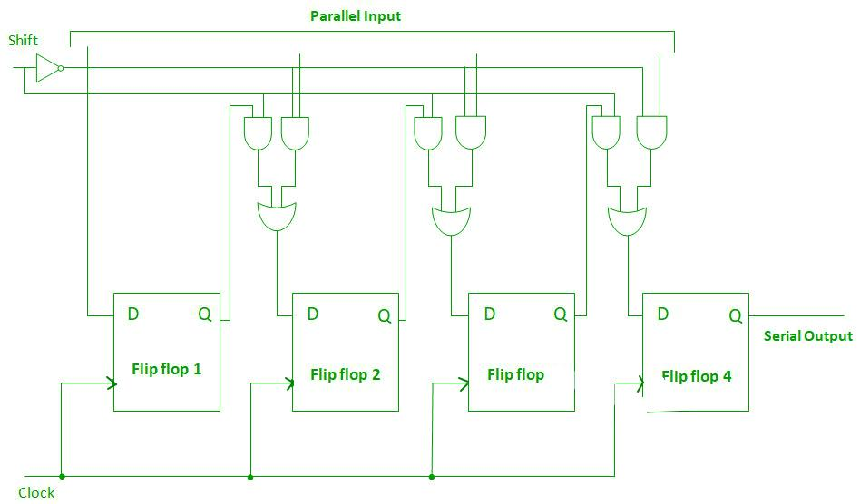
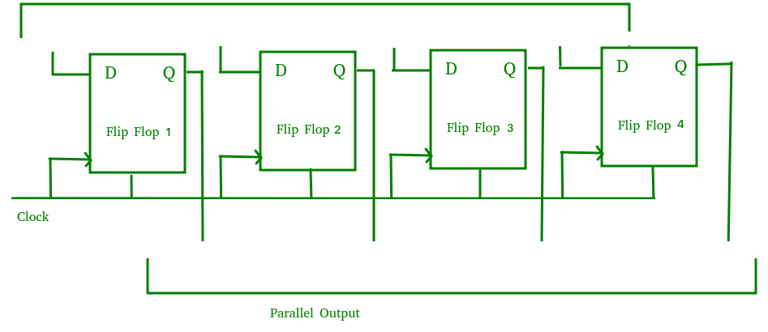
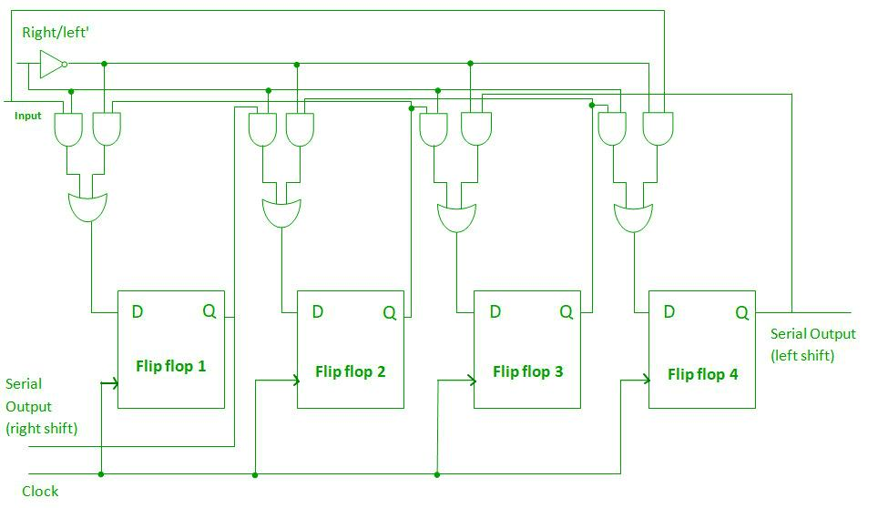
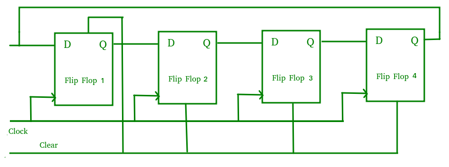
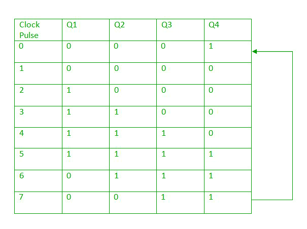
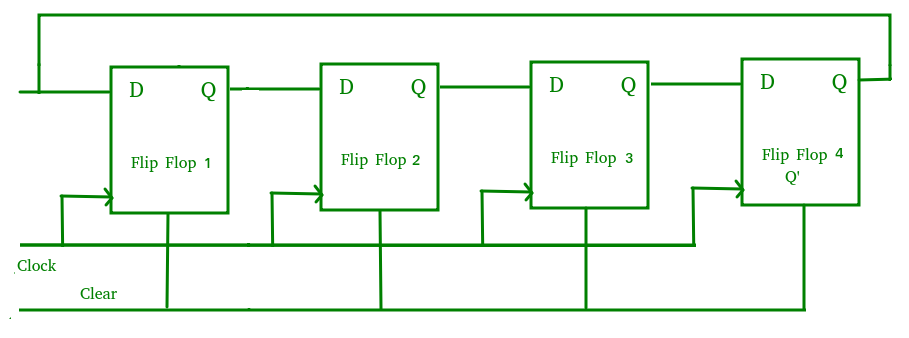

A Flip flops can be used to store a single bit of binary data (1or 0). However in order to store multiple bits of data we need multiple flip flops. N flip flops are to be connected in an order to store n bits of data. A Register is a device which is used to store such information. It is a group of flip flops connected in series used to store multiple bits of data.
The information stored within these registers can be transferred with the help of shift registers. Shift Register is a group of flip flops used to store multiple bits of data. The bits stored in such registers can be made to move within the registers and in/out of the registers by applying clock pulses. An n-bit shift register can be formed by connecting n flip-flops where each flip flop stores a single bit of data.
The registers which will shift the bits to left are called “Shift left registers”.
The registers which will shift the bits to right are called “Shift right registers”.
Shift registers are basically of 4 types. These are:
- Serial In Serial Out shift register
- Serial In parallel Out shift register
- Parallel In Serial Out shift register
- Parallel In parallel Out shift register
Serial-In Serial-Out Shift Register (SISO) –
The shift register, which allows serial input (one bit after the other through a single data line) and produces a serial output is known as Serial-In Serial-Out shift register. Since there is only one output, the data leaves the shift register one bit at a time in a serial pattern, thus the name Serial-In Serial-Out Shift Register.
The logic circuit given below shows a serial-in serial-out shift register. The circuit consists of four D flip-flops which are connected in a serial manner. All these flip-flops are synchronous with each other since the same clock signal is applied to each flip flop.

The above circuit is an example of shift right register, taking the serial data input from the left side of the flip flop. The main use of a SISO is to act as a delay element.
Serial-In Parallel-Out shift Register (SIPO) –
The shift register, which allows serial input (one bit after the other through a single data line) and produces a parallel output is known as Serial-In Parallel-Out shift register.
The logic circuit given below shows a serial-in parallel-out shift register. The circuit consists of four D flip-flops which are connected. The clear (CLR) signal is connected in addition to clock signal to all the 4 flip flops in order to RESET them. The output of the first flip flop is connected to the input of the next flip flop and so on. All these flip-flops are synchronous with each other since the same clock signal is applied to each flip flop.

The above circuit is an example of shift right register, taking the serial data input from the left side of the flip flop and producing a parallel output. They are used in communication lines where demultiplexing of a data line into several parallel line is required because the main use of SIPO register is to convert serial data into parallel data.
Parallel-In Serial-Out Shift Register (PISO) –
The shift register, which allows parallel input (data is given separately to each flip flop and in a simultaneous manner) and produces a serial output is known as Parallel-In Serial-Out shift register.
The logic circuit given below shows a parallel-in serial-out shift register. The circuit consists of four D flip-flops which are connected. The clock input is directly connected to all the flip flops but the input data is connected individually to each flip flop through a multiplexer at input of every flip flop. The output of the previous flip flop and parallel data input are connected to the input of the MUX and the output of MUX is connected to the next flip flop. All these flip-flops are synchronous with each other since the same clock signal is applied to each flip flop.

A Parallel in Serial out (PISO) shift register us used to convert parallel data to serial data.
Parallel-In Parallel-Out Shift Register (PIPO) –
The shift register, which allows parallel input (data is given separately to each flip flop and in a simultaneous manner) and also produces a parallel output is known as Parallel-In parallel-Out shift register.
The logic circuit given below shows a parallel-in parallel-out shift register. The circuit consists of four D flip-flops which are connected. The clear (CLR) signal and clock signals are connected to all the 4 flip flops. In this type of register there are no interconnections between the individual flip-flops since no serial shifting of the data is required. Data is given as input separately for each flip flop and in the same way, output also collected individually from each flip flop.

A Parallel in Parallel out (PIPO) shift register is used as a temporary storage device and like SISO Shift register it acts as a delay element.
Bidirectional Shift Register –
If we shift a binary number to the left by one position, it is equivalent to multiplying the number by 2 and if we shift a binary number to the right by one position, it is equivalent to dividing the number by 2.To perform these operations we need a register which can shift the data in either direction.
Bidirectional shift registers are the registers which are capable of shifting the data either right or left depending on the mode selected. If the mode selected is 1(high), the data will be shifted towards the right direction and if the mode selected is 0(low), the data will be shifted towards the left direction.
The logic circuit given below shows a Bidirectional shift register. The circuit consists of four D flip-flops which are connected. The input data is connected at two ends of the circuit and depending on the mode selected only one and gate is in the active state.

Shift Register Counter –
Shift Register Counters are the shift registers in which the outputs are connected back to the inputs in order to produce particular sequences. These are basically of two types:
- Ring Counter –
A ring counter is basically a shift register counter in which the output of the first flip flop is connected to the next flip flop and so on and the output of the last flip flop is again fed back to the input of the first flip flop, thus the name ring counter. The data pattern within the shift register will circulate as long as clock pulses are applied.
The logic circuit given below shows a Ring Counter. The circuit consists of four D flip-flops which are connected. Since the circuit consists of four flip flops the data pattern will repeat after every four clock pulses as shown in the truth table below:


A Ring counter is generally used because it is self-decoding. No extra decoding circuit is needed to determine what state the counter is in.
- Johnson Counter –
A Johnson counter is basically a shift register counter in which the output of the first flip flop is connected to the next flip flop and so on and the inverted output of the last flip flop is again fed back to the input of the first flip flop. They are also known as twisted ring counters.The logic circuit given below shows a Johnson Counter. The circuit consists of four D flip-flops which are connected. An n-stage Johnson counter yields a count sequence of 2n different states, thus also known as mod-2n counter. Since the circuit consists of four flip flops the data pattern will repeat every eight clock pulses as shown in the truth table below:


The main advantage of Johnson counter is that it only needs n number of flip-flops compared to the ring counter to circulate a given data to generate a sequence of 2n states.
Applications of shift Registers –
- The shift registers are used for temporary data storage.
- The shift registers are also used for data transfer and data manipulation.
- The serial-in serial-out and parallel-in parallel-out shift registers are used to produce time delay to digital circuits.
- The serial-in parallel-out shift register is used to convert serial data into parallel data thus they are used in communication lines where demultiplexing of a data line into several parallel line is required.
- A Parallel in Serial out shift register us used to convert parallel data to serial data.
Reference –
Registers – ee.usyd.edu.au